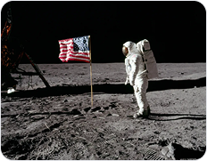
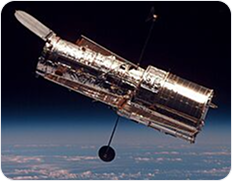
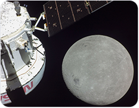
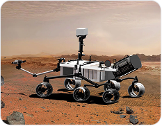
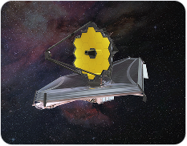
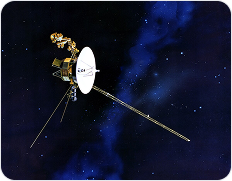
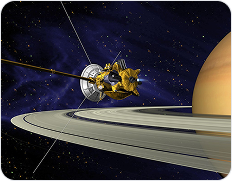

Missions
| Cover | Mission | Objective | Launch Date |
|---|---|---|---|
|  |
Apollo 11
NASA
|
Achieved the first crewed lunar landing, fulfilling a major national goal and demonstrating unparalleled technological achievement. | July 16, 1969 |
|  |
Hubble (HST)
NASA
JPL |
Provide high‑resolution images of astronomical objects in the visible, ultraviolet, and near‑infrared light spectra. | April 24, 1990 |
|  |
Artemis 1 Orion
NASA
|
Uncrewed test flight of the Orion spacecraft and the powerful Space Launch System rocket in preparation for returning astronauts to the Moon. | November 16, 2022 |
|  |
Curiosity Rover
NASA
|
Explore Gale Crater on Mars to determine if the planet ever had the environmental conditions to support microbial life. | July 16, 1969 |
|  |
James Webb
NASA
ESA CSA |
The largest and most powerful space telescope ever launched, providing unprecedented views into the cosmos's infancy. | December 25, 2021 |
|  |
Voyager 1
NASA
|
It is currently the most distant human‑made object and the first to officially enter interstellar space. | September 5, 1977 |
|  |
Cassini–Huygens
NASA
ESA ASI |
Perform a detailed study of Saturn, its rings, and its moons, notably deploying the Huygens probe onto Titan. | October 15, 1997 |

|
Curiosity Rover
NASA
JPL |
Search for signs of ancient microbial life in Jezero Crater and cache rock and soil samples for retrieval by future missions. | July 30, 2020 |

|
New Horizons
NASA
JHUAPL |
Conduct the first close‑up exploration of the dwarf planet Pluto and the outer solar system's Kuiper Belt. | January 19, 2006 |

|
ISS
NASA
Roscosmos JAXA/ESA |
Serve as a permanent orbiting research facility where crews conduct long‑duration microgravity experiments. | November 20, 1998 |